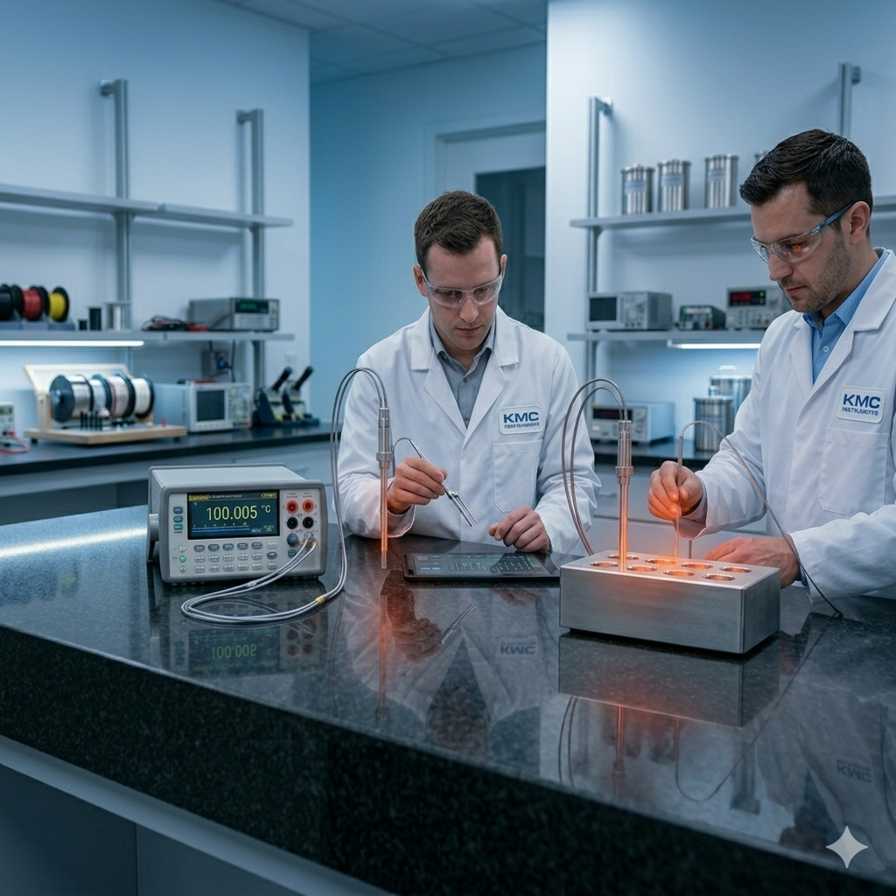

Accurate and reliable calibration for pressure, mechanical, thermal, electrical, and weighing instruments to ensure precise measurements and compliance.

Process Instrument Calibration And Trade
KMC Instrument delivers high-quality calibration services designed to ensure accuracy, reliability, and compliance across a wide range of industrial and laboratory instruments. Our expertise spans multiple calibration domains with a strong focus on precision and consistency.
With advanced equipment and skilled professionals, we help businesses maintain measurement standards, improve operational efficiency, and meet industry requirements with confidence.
Industry-leading security solutions backed by expertise and innovation
Fully certified security professionals with industry-recognized qualifications and complete insurance coverage.
Recognized for excellence in customer service and innovative security solutions across the industry.
24/7 emergency support with average response times under 15 minutes for critical issues.